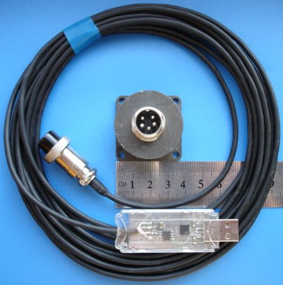
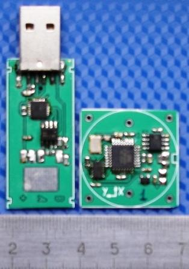

{kind=link}

e-mail: post4inet@gmail.com |
| акселерометры | - обзор предлагаемых устройств |
| прецизионный акселерометр |
-
измерение малых ускорений,
-
широкий динамический диапазон
|
| акселерометр Bluetooth | ВИДЕО Акселерометр Bluetooth -график в реальном времени |
| акселерометр USB | ВИДЕО 1 Измерения
акселерометром
USB с памятью =================== ВИДЕО 2 Синхронная запись ДВУМЯ акселерометрами USB |
| акселерометр RS-485 | ВИДЕО Измерения акселерометром RS-485 |
| акселерометры с аналоговыми выходами | |
| Ударные испытания транспорта | ВИДЕО Испытания ж/д цистерны на удар |
| Ударные испытания оборудования | ВИДЕО Испытания велосипедных шлемов на удар |
| Программное обеспечение |
| Параметры акселерометров |
| Применение акселерометров |
Акселерометр с интерфейсом RS-485 позволяет отнести измерительную часть на несколько десятков метров от компьютера, передача ЦИФРОВЫХ данных выполняется по длинному 4-проводному кабелю.
ВИДЕО Измерения акселерометром RS-485Акселерометры выполнены
на базе цифрового
MEMS-акселерометра
Analog
Devices.
Остальные возможности у
акселерометра
с
интерфейсом RS-485 такие же,
как у акселерометра
USB без
микросхемы памяти (см. страничку акселерометр USB без ИС
памяти).
Акселерометр 16g RS-485 и акселерометр 200g RS-485 изготавливаются на одинаковых платах, их отличие в диапазонах измеряемых ускорений. Остальные параметры и программное обеспечение идентичны.
Прилагаемое
программное
обеспечение позволяет определить следующие параметры измерения:
- диапазон измеряемых ускорений
акселерометра 16g RS-485 ±2g, ±4g, ±8g или ±16g,
акселерометра 200g RS-485 ±25g, ±50g, ±100g или ±200g,
-
число осей акселерометра, по которым
выполняется измерение (использование
не всех осей актуально при
построении графика по большому числу
выборок - при открытии мегабайтных файлов, хранящих результаты
измерений, на
построение графика требуется ощутимое время),
- частоту выборки акселерометра 3200 Гц, 1600 Гц, 800 Гц, 400
Гц, 200Гц, 100Гц,
50Гц, 25 Гц, 12,5Гц или 6,25 Гц
- время измерения / число выборок, ограниченные только объемом
оперативной памяти вашего компьютера.
Для ознакомления с возможностями приложения по обработке сигнала, вычислениям, документированию, экспорту данных в другие приложения перейдите по этой ссылке
В архиве acc-usb.zip размещено приложение для акселерометром USB и Help-файл, в архиве dataAcc-usb.zip - файлы данных, записанные как акселерометром USB, так и акселерометром RS-485.
Пользовательский интерфейс приложений для акселерометров USB и RS-485 ничем не отличается (отличие во внутренних командах, оно не заметно оператору) - вы можете скачать его для ознакомления с работой.
Акселерометр
с разъемом
акселерометр в
корпусе адаптер RS-485 USB
В
комплект акселерометра
с
интерфейсом RS-485
входит
-плата акселерометра в металлическом корпусе с разъемом;
-кабель длиной 5м с адаптером RS-485<=>USB в
поликарбонатном корпусе.

Результаты, записанные акселерометрами с разными измерительными параметрами при ударном воздействии, представлены здесь.